INTRODUCTION
I wanted to create a game and record my progress in my design decisions. The game will be Minesweeper and it will be playable on a web page. The goal will be to get a better understanding of web technologies for games and to get better at designing. I want the game rules to resemble classic Minesweeper, and I want to explore the aesthetics of the game. Recently having made a 2048 clone in vb.net has shown me how important it is to have a beautiful and fluid experience that is rewarding. The game should feel like a solid object you can interact with, and should feel natural and easy to learn. I believe it can break or make the entire game.
Why Minesweeper?
Minesweeper has a simple concept, is fun and I already made it once in C++. Since the goal is not to get better at coding, but to learn new technologies and get better at designing, I decided to create a game I was familiar with.
The rules of Minesweeper
The rules of the game will be similar to that of classic Minesweeper. It's possible that I will add features to my desire, but the underlying gameplay will be the same.
- The game will feature a grid of squares, let's say 20 by 20.
- Each square represents a tile.
- On a tile there can either a mine, or an empty square.
- When clicking on a tile the tile will show it's true nature, a mine or an empty square.
- If the player clicks on a square that is a mine he will lose the game
- When an empty square is adjacent to (a) mine(s), it will show a number with how many mines are adjacent.
- If it's not adjacent to a mine it will show the nature of the surrounding tiles, each of them will undergo the same process.
- A player can highlight where he thinks mines are with a symbol, this is to help the player visualize what he thinks the true nature of the minefield looks like.
- The player wins when he has shown the true nature of every tile that is not a mine. The score of the player will be the time it took for him to do this.
Aesthetics
I want the experience to 'feel' fluid. This will be my main goal. It should feel natural and beautiful. The game should be easy to pick up and play. There shouldn't be any barriers to play the game. Deeper customizable features should be naturally shown when it feels logical. I will use the game 2048 as my main source of inspiration for the feel of the game. I will evaluate what makes 2048 an enjoyable experience, and I will try to apply it onto my game. This doesn't mean I will use the same style as 2048.
Code readability and scalability
The code should be easy to read and easy to scale. I like to code quick and dirty and refactor after every main feature, but I should learn to think more about my code, and the structure of it before I write it. This will be a secondary goal. This will be something for myself and I will evaluate myself after this project.
BUILDING THE GAME
Tools and Tech
I'm not too sure what I will need. This list may be inaccurate.
- HTML5
- Javascript
- CSS
- SublimeText 3
- Photoshop/Illustrator
- Pen and paper
Understanding the Javascript gameloop
I've built some stuff in Javascript in the past, and coming from a background in C++ this was sometimes confusing. Javascript is event driven and this made my code difficult to understand. I would do one thing in a gameloop and other things with events.
It's probably possible to create a nice looking version with events only, but I want to have the level of control that I know I can get with my trusted gameloop.
I found a great reference at codeincomplete that explains the gameloop in Javascript.
'Hello Gameloop'
With the reference in hand I will build a gameloop. I also read there was an fps meter I could easily implement. Knowing this is a valuable asset to my game, this will be the first thing I will make. An empty screen with an fps meter.
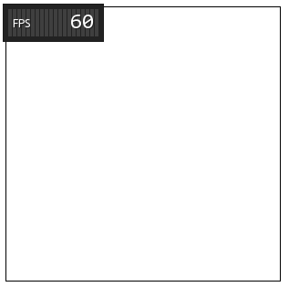It was on the zeroth day god created the framerate, and god said, let there be an Update() function and a Render() function, and shall there be no loss of frames, and god saw it was good. And it was fairly easy to do. Here is the code.
var canvas = document.getElementById("game"),
var now, //the time since startup in milliseconds
dt = 0, // time between last frame
last = Timestamp(), // time from the previous frame
fps = 60, // fps cap
step = 1/fps; // time passed in each frame in seconds
var fpsmeter = new FPSMeter({decimals: 0,
graph: true,
theme: 'dark',
});
// Gameloop function
function Frame() {
// This should always be called at the beginning of Frame
fpsmeter.tickStart();
now = Timestamp();
dt = dt + Math.min(1, (now - last) / 1000);
while(dt > step) {
dt = dt - step;
Update(step);
}
Render(dt);
last = now;
fpsmeter.tick();
requestAnimationFrame(Frame);
}
// Update function
function Update(dt){
}
// Rendering function
function Render(dt){
}
// Will return the time since startup
function Timestamp() {
return window.performance && window.performance.now ? window.performance.now()
: new Date().getTime();
}
// call frame for the first time
requestAnimationFrame(Frame);
And the HTML code.
<!DOCTYPE html>
<html>
<head>
</head>
<body>
<canvas id="game" width="300" height="300"
style="border:1px solid #000000;">
</canvas>
<script src="FPSMeter.js"></script>
<script src="game.js"></script>
</body>
</html>
Generating a field
Next up I want to generate a field of tiles. It doesn't have to look pretty yet, it just has to work. I probably will start using some objects. I will need a tile object, and a field object that is basically a 2D array of tile objects.
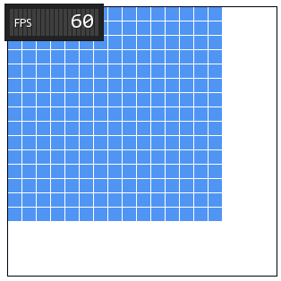I Added a lot of code to the project and changed some stuff around to make it more clean. The html file basically stayed the same except for some includes. The gameloop currently looks like this.
'use strict'
var Game = {
run: function(options){
var now, //the time since startup in milliseconds
dt = 0, // time between last frame
last = Timestamp(), // time from the previous frame
fps = 60, // fps cap
update = options.update,
render = options.render,
step = 1/fps; // time passed in each frame in seconds
var fpsmeter = new FPSMeter({decimals: 0,
graph: true,
theme: 'dark',
});
// Gameloop function
function Frame() {
// This should always be called at the beginning of Frame
fpsmeter.tickStart();
now = Timestamp();
dt = dt + Math.min(1, (now - last) / 1000);
while(dt > step) {
dt = dt - step;
update(step);
}
render(dt);
last = now;
fpsmeter.tick();
requestAnimationFrame(Frame);
}
// Will return the time since startup
function Timestamp() {
return window.performance && window.performance.now ? window.performance.now()
: new Date().getTime();
}
// call frame for the first time
requestAnimationFrame(Frame);
},
}
I created a new file called application.js that looks like this.
'use strict'
var Application = (function() {
//===================================
// CONSTANTS
//===================================
var FIELDX = 15,
FIELDY = 15,
TILESIZE = 15,
TILESPACE = 1;
//===================================
// VARIABLES
//===================================
var canvas = document.getElementById("game");
var ctx = canvas.getContext('2d');
var field = new Field(FIELDX, FIELDY, TILESIZE, TILESPACE);
//===================================
// GAME - UPDATE/RENDER
//===================================
function Update(dt) {
field.Update(dt);
}
function Render(dt) {
canvas.width = canvas.width; // This clears the canvas
field.Render(ctx);
}
Game.run({update: Update, render : Render});
})();
This way my code is better encapsulated. Ofcourse I also added 2 new objects. One field object and one tile object. They are as followed.
'use strict'
var Field = function(fieldX,fieldY, tileSize, tileSpace){
console.log('field created');
//===================================
// VARIABLES
//===================================
this.fieldX = fieldX;
this.fieldY = fieldY;
this.tileSize = tileSize;
this.tileSpace = tileSpace;
this.tile = [];
for (var i = 0, l = fieldX; i < l; i++) {
this.tile[i] = [];
for (var j = 0, l2 = fieldY; j < l2; j++) {
this.tile[i][j] = new Tile(i*(tileSize+tileSpace), j*(tileSize+tileSpace), tileSize);
}
}
}
Field.prototype.Update = function(dt){
//console.log("Update")
//this.x = Math.cos(new Date().getTime()/300)*100+ 100;
//this.y = Math.sin(new Date().getTime()/300)*100+ 100;
}
Field.prototype.Render = function(ctx){
//console.log("Render")
for (var i = 0, l = this.fieldX; i < l; i++) {
for (var j = 0, l2 = this.fieldY; j < l2; j++) {
this.tile[i][j].Render(ctx);
}
}
}
'use strict'
var Tile = function(x, y, size){
console.log('tile created');
//===================================
// VARIABLES
//===================================
this.x = x;
this.y = y;
this.size = size;
}
Tile.prototype.Update = function(dt){
//console.log("Update")
}
Tile.prototype.Render = function(ctx){
//console.log("Render")
ctx.fillStyle="#5095F4";
ctx.fillRect(this.x, this.y, this.size, this.size);
}
Handling input and generating tiles
There is still no way to interact with the game. Time to add input. I will make tiles clickable, when a tile is clicked I want them to change color.
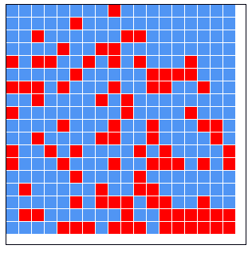From now on out I will show less code and more pictures of my progress. If you want to see how I did this then you can check the source code.
I don't like how the canvas doesn't resize according to the size of my field so let's change that. Let's also add a minefield generator while we're at it. The red tiles represent mines.
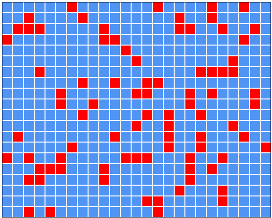Because I know you love code, here is how I did the generating of mines.
Field.prototype.GenerateBombs = function(amount){
var curAmount = 0;
while (curAmount < amount){
var x = parseInt(Math.random() * this.fieldX);
var y = parseInt(Math.random() * this.fieldY);
if (this.tile[x][y].GetBomb() === false){
this.tile[x][y].SetBomb(true);
curAmount += 1;
}
}
}
It generates a random tile and checks if it doesn't contain a bomb. If it doesn't then it adds a bomb and increments the current amount of bombs added by one. The while loop keeps going until the function has added the requested amount of bombs.
States and values
Time to add some states to my tile. There are a couple of states a tile can have but I will add the most basic ones first, SHOWN and HIDDEN. I will try to do this with some sort of enumerator to keep things clean. When clicked the state should change to shown.
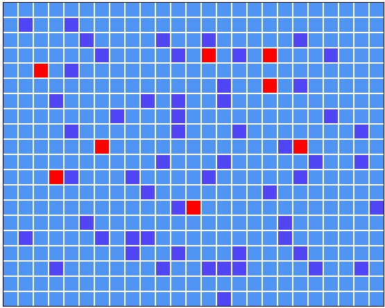Perfect! As you can see I lost 8 times this game, but that's ok for now. I can click on tiles and show their true nature.
Next I will implement the numbers. When shown it should show how many mines are adjacent to the tile.
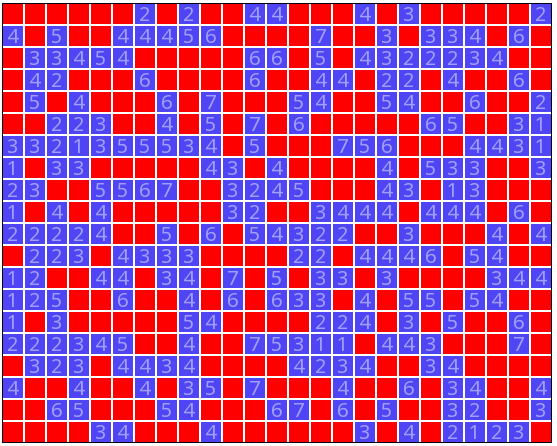Seems pretty ok. All numbers seem to be correct. Here is how I did it.
Field.prototype.CalculateSurroundingTile = function(tile){
var x = tile.GetNX();
var y = tile.GetNY();
var surrounding = 0;
if (x != 0)
if (this.tile[x-1][y].GetBomb()) surrounding += 1; //left
if (x < this.fieldX-1)
if (this.tile[x+1][y].GetBomb()) surrounding += 1; //right
if (y != 0)
if (this.tile[x][y-1].GetBomb()) surrounding += 1; //up
if (y < this.fieldY-1)
if (this.tile[x][y+1].GetBomb()) surrounding += 1; //down
if (x != 0 && y != 0)
if (this.tile[x-1][y - 1].GetBomb()) surrounding += 1; //left up
if (x < this.fieldX-1 && y != 0)
if (this.tile[x+1][y - 1].GetBomb()) surrounding += 1; //right up
if (y < this.fieldY-1 && x != 0)
if (this.tile[x - 1][y+1].GetBomb()) surrounding += 1; //left down
if (y < this.fieldY-1 && x < this.fieldX - 1)
if (this.tile[x + 1][y+1].GetBomb()) surrounding += 1; //right down
return surrounding;
}
Revealing empty spots
Now comes a bit of a tricky part. When clicking on a tile with no number, it should show the surrounding tiles, and they on their turn should show their surrounding tiles if they are empty too and so on. We should be able to solve this with some recursive functions. I probably have to rewrite some stuff too. Let's start by making a function that just shows all surrounding tiles of a tile.

Kebam. I use 2 functions to do this recursively. Here they are.
// This one is called from the tile class when you click on a tile
Field.prototype.ShowTile = function(tile){
//Check if the adjecent tile is 0 and doesn't have a bomb
if (tile.GetState() != tileState.type.SHOWN && tile.GetSurrounding() === 0
&& tile.GetBomb() === false){
tile.SetState(tileState.type.SHOWN);
this.RevealSurrounding(tile);
}
else{
tile.SetState(tileState.type.SHOWN);
}
}
Field.prototype.RevealSurrounding = function(tile){
var x = tile.GetNX();
var y = tile.GetNY();
if (x != 0)
this.ShowTile(this.tile[x-1][y]);
if (x < this.fieldX-1)
this.ShowTile(this.tile[x+1][y]);
if (y != 0)
this.ShowTile(this.tile[x][y-1]);
if (y < this.fieldY-1)
this.ShowTile(this.tile[x][y+1]);
if (x != 0 && y != 0)
this.ShowTile(this.tile[x-1][y-1]);
if (x < this.fieldX-1 && y != 0)
this.ShowTile(this.tile[x+1][y-1]);
if (y < this.fieldY-1 && x != 0)
this.ShowTile(this.tile[x-1][y+1]);
if (y < this.fieldY-1 && x < this.fieldX - 1)
this.ShowTile(this.tile[x+1][y+1]);
}
Flagging
It's already starting to look a lot like Minesweeper! But one thing that is annoying me is not being able to tag mines. So let's make it so right clicking on a tile changes its color and locks it from showing.
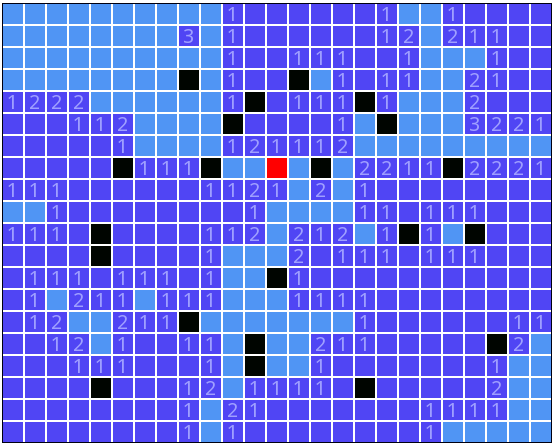Much better. The black tiles are flagged tiles and aren't clickable. Now all we have to do is implement some game over function whenever we click on a non tagged tile that is a bomb. For now the GameOver function will just reveal the entire board.
Prettifying
After playing the game for a bit everything seems to be working fine! Let's prettify it a bit. First I'll give the flagged rectangles a better colour, also it's probably a good idea to make the background a nice colour and give the rects a smooth corner. Let's see how it looks.
The rounded rectangles look very ugly. The lines in between look a bit more easy on the eye, but it's not satisfactory yet. The flagged tiles are now grey, and altough it feels more pleasant than black tiles, it's not obvious that they are tagged. Time for me to start working in photoshop. and get this fixed. I need to create a better color scheme that I'm happy with. It's not the permanent color scheme (or maybe it is) but atleast it will be better than the current one.
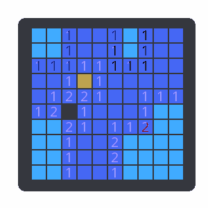A quick mockup in GIMP gave me this. I like the colors for now, they're probably not the final ones though but they're better than the current ones.
While experimenting with the old colors, I like the original one for the shown tile better, so I kept that one. The game now looks like this.
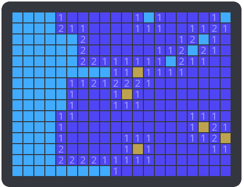I don't like how there is little interaction with the game. I'm going to implement a hover color, and clickingcolor.
Let's play the game! Here is the current version.
As you can see it's already playable, but there are still some things that are annoying. For example, you can die on the first click. You can't reset the game and you don't know if you've won. There are also some minor bugs with the selecting and hovering. Not being able to win and not being able to die on the first click are the most important ones now. Let's fix them first.
After generating a big field, the game seems to be running way too slow. I read in the original document for the implementation of the gameloop and render pipeline that we could implement a caching mechanism to render only when the canvas changed. So let's implement this quickly before we do anything else. I won't go into detail how I did it as you can look it up here.
Animation
Let's implement a little animation. When the tiles get initialised they should 'pop up'.
Let's also add a quick reset button so I can test it.
Looks fantastic. The game is coming alive.
This is very fun, I'm going to expand the animations.
After experimenting a bit with animations, it has come to my attention that fonts don't like to get scaled. When making them smaller, they appear wobbly. After testing on another pc the bug disappeared. This must be some option in chrome. I'll leave it for now. Let's make the animations more adaptable in code.
When a field of empty tiles is revealed, they now get revealed in an explosive pattern. Also when clicking on a tile, the tile has an animation.
After making some design iterations the game looks like this
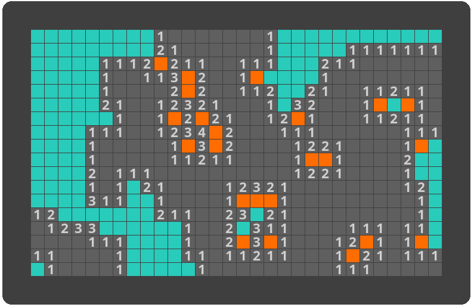I'm not sure if I like the outer border and inner borders. It's probably a bit too fat, while the inner ones are too thin. I like the new colors and the fatter font. Also you can't see it now but the game plays much more fluid and feels nicer. You'll be able to play it later in a new chapter.
I don't like how the game gives an equal focus on solved parts and yet to be solved parts. So let's add something to the game that will do that for me. I thought about it and fading the fonts of solved parts seems like a nice solution.
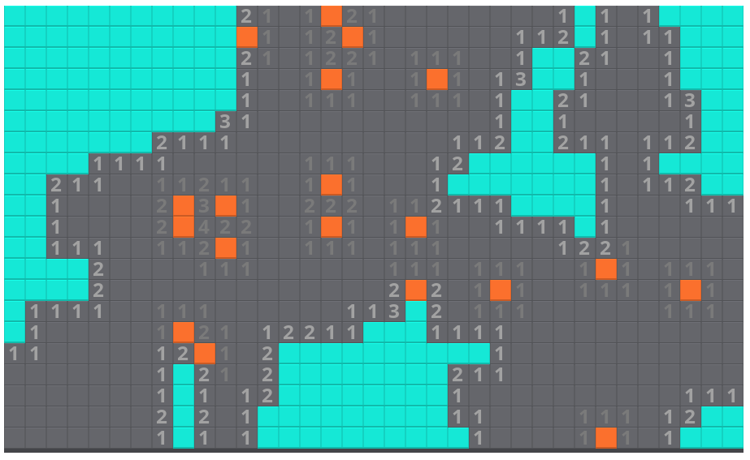I added some bevel to the tiles and it's looking much much better. Downside is that the game takes a lot longer to render. So let's keep iterating and refining. Now it's all iteration until I'm happy with the game. I still need to add a menu, that will be the last thing I add.